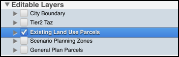

Layer Management Window
The Layer Management window on the left side of the user interface displays layers that have been preloaded into UrbanFootprint, and that can be turned on for display and activated for selection, editing, and queries.
The Layer Management window is broken up into 4 sections:
- Layers List
- Layers Menu
- Reordering Layers Menu
- Upload

1. Layers List
The Layers List is broken up into 4 sections:
- Analysis Results
- Basemaps
- Reference Layers
- Future Scenario Layers when viewing a future scenario
The user can select an active layer by clicking on the layer name. The active layer will then highlight in blue.

Example: Existing Land Use Parcels is visible on the map (checkbox) and is the active layer (blue highlight).
Important: Any map selection, attribute query, export layer, export csv initiated by the user will occur on the active layer regardless of whether it is visible or not.
Each layer's legend is viewable by clicking on the arrow in front of the layer and then expanding the arrow that appears below the layer.

To edit the layer styling, use the layer symbology menu accessible in the Layers Menu
2. Layers Menu
The Layers Menu is accessed in the upper right section of the Layer Management Window via the button .
The Layers Menu has 3 options:
- Exporting Layer to gdb
- Layer Symbology
- Manage Layers
Exporting Active Layer
Exporting Active Layer: The user can export the Active Layer to a geodatabase (.gdb) by clicking on the layers button on the Layers Tool Bar. The user can initiate exporting by clicking ‘OK’ on a window that opens up once the user clicks on the ‘Export Active Layer – to gdb’ button. By default, the exported layer is saved to the user's default Download folder.
Layer Symbology
The Layer Symbology allows the user to modify the way a layer is dsiplayed on the map. A user can add new styles, edit previously saved styles, and view the default style for the active layer's legend.
To open the Layer Symbology, the user can click on the Layers Menu button in the Layer Management Window and select 'Layer Symbology' in the drop down.
The default style is not editable.

New styles can be added as single, categorical, or quantitative legends.

Manage Layers
The Manage Layers menu allows users to modify the layers visible in the Layers List. A user can check or uncheck layers here to update the Layer List.
3. Reordering Map Layers
Reordering Map Layers: The user can re-order layers on the map by clicking on the arrow button on the right side of the Layers Tool Bar. This button will open a window where the user can order the layers by clicking on the layer name and dragging it into the order the user prefers within the visible list. This order corresponds to the layer order on the map.
4. Upload
Upload gdb and shape files directly into the SPM using the Upload button at the bottom left corner of the page. (Also see ArcGIS Integration for importing layers from ArcMap directly to UrbanFootprint.)
Once the upload button is clicked, select the zipped gdb or shape file in the file selector. The layer will start uploading immediately and is automatically added to the Layer Management Window once completed. Uploaded layers are added as reference layers to the current project and are visible to all users of that project.
Note: The upload file size limit is 100 MB